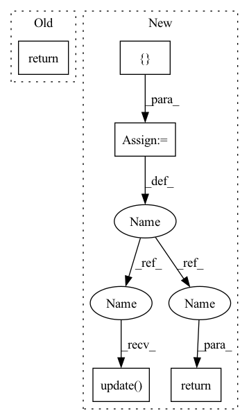

Pattern ID :639
Before Change
return {"pred": pred}
else:
emb = self.fc(emb)
return {"emb": emb}
def _init_weight(self):
for m in self.modules():After Change
self.use_softmax = args.use_softmax
def forward(self, x):
dict_outputs = {}
emb = self.segment_head(x)
if self.use_img_inp or self.use_visual_acuity:
img_inp = self.fc_img_inp(emb)
dict_outputs.update({"img_inp": img_inp})
if self.use_softmax:
pred = self.classifier(emb)
dict_outputs.update({"pred": pred})
else:
emb = self.fc(emb)
dict_outputs.update( {"emb": emb})
return dict_outputs
def _init_weight(self):
for m in self.modules():
if isinstance(m, nn.Conv2d):In pattern: SUPERPATTERN
Frequency: 3
Non-data size: 5
Instances Fragment ID: 2276162
Project Name: noelshin/pixelpick
Commit Name: 0a7e51c1131e51d19bc5a92b43f6d2248e666e54
Time: 2021-01-14
Author: gyungin@robots.ox.ac.uk
File Name: segmentation/networks/decoders.py
M Class Name: SegmentHead
N Class Name: SegmentHead
M Method Name: forward(2)
N Method Name: forward(2)
M Parent Class: nn.Module
N Parent Class: nn.Module
M File Name: segmentation/networks/decoders.py
N File Name: segmentation/networks/decoders.py
M Start Line: 135
M End Line: 139
N Start Line: 136
N End Line: 149
Before Change
emb = self.segment_head(x)
if self.use_softmax:
pred = self.classifier(emb)
return {"pred": pred}
else:
emb = self.fc(emb)
return {"emb": emb}After Change
self.use_softmax = args.use_softmax
def forward(self, x):
dict_outputs = {}
emb = self.segment_head(x)
if self.use_img_inp or self.use_visual_acuity:
img_inp = self.fc_img_inp(emb)
dict_outputs.update({"img_inp": img_inp})
if self.use_softmax:
pred = self.classifier(emb)
dict_outputs.update( {"pred": pred})
else:
emb = self.fc(emb)
dict_outputs.update({"emb": emb})
return dict_outputs
def _init_weight(self):
for m in self.modules(): Fragment ID: 2276163
Project Name: noelshin/pixelpick
Commit Name: 0a7e51c1131e51d19bc5a92b43f6d2248e666e54
Time: 2021-01-14
Author: gyungin@robots.ox.ac.uk
File Name: segmentation/networks/decoders.py
M Class Name: SegmentHead
N Class Name: SegmentHead
M Method Name: forward(2)
N Method Name: forward(2)
M Parent Class: nn.Module
N Parent Class: nn.Module
M File Name: segmentation/networks/decoders.py
N File Name: segmentation/networks/decoders.py
M Start Line: 135
M End Line: 139
N Start Line: 136
N End Line: 149
Before Change
if labels is not None:
return F.binary_cross_entropy_with_logits(out, labels.float())
else:
return torch.sigmoid(out)
After Change
x = self.pcnn(x, mask)
out = self.dense(x)
result = { "pred": torch.sigmoid(out)}
if labels is not None:
result.update( {"loss": F.binary_cross_entropy_with_logits(out, labels.float())})
return result
Fragment ID: 2276160
Project Name: spico197/rex
Commit Name: 3d53bde021c8bd91ee18c769f00319751168ce7d
Time: 2021-06-06
Author: spico1026@gmail.com
File Name: rex/models/sent_pcnn.py
M Class Name: SentPCNN
N Class Name: SentPCNN
M Method Name: forward(6)
N Method Name: forward(6)
M Parent Class: nn.Module
N Parent Class: nn.Module
M File Name: rex/models/sent_pcnn.py
N File Name: rex/models/sent_pcnn.py
M Start Line: 56
M End Line: 61
N Start Line: 56
N End Line: 62
Before Change
bx_o = [b[o] for b, o in zip(boxes, bo)]
indices = self.matcher(bx_h, bx_o, objects, prior, logits, targets)
return dict(
interaction_loss=self.interaction_loss(bx_h, bx_o, indices, prior, logits, targets)
)
After Change
indices = self.matcher(bx_h_post, bx_o_post, objects, prior, logits, targets)
loss_dict = { "focal_loss": self.interaction_loss(n, indices, prior, logits, targets)}
loss_dict.update( self.regression_loss(
bx_h, bx_o, bx_h_post, bx_o_post, indices, targets, bbox_deltas.split(n)
))
return loss_dict
def box_cxcywh_to_xyxy(x):
x_c, y_c, w, h = x.unbind(-1) Fragment ID: 2276155
Project Name: fredzzhang/upt
Commit Name: def79003d35c81f7efcbcdb738042ec18038995d
Time: 2021-10-28
Author: frederic.zhang@anu.edu.au
File Name: ops.py
M Class Name: SetCriterion
N Class Name: SetCriterion
M Method Name: forward(9)
N Method Name: forward(8)
M Parent Class: nn.Module
N Parent Class: nn.Module
M File Name: ops.py
N File Name: ops.py
M Start Line: 277
M End Line: 283
N Start Line: 305
N End Line: 322